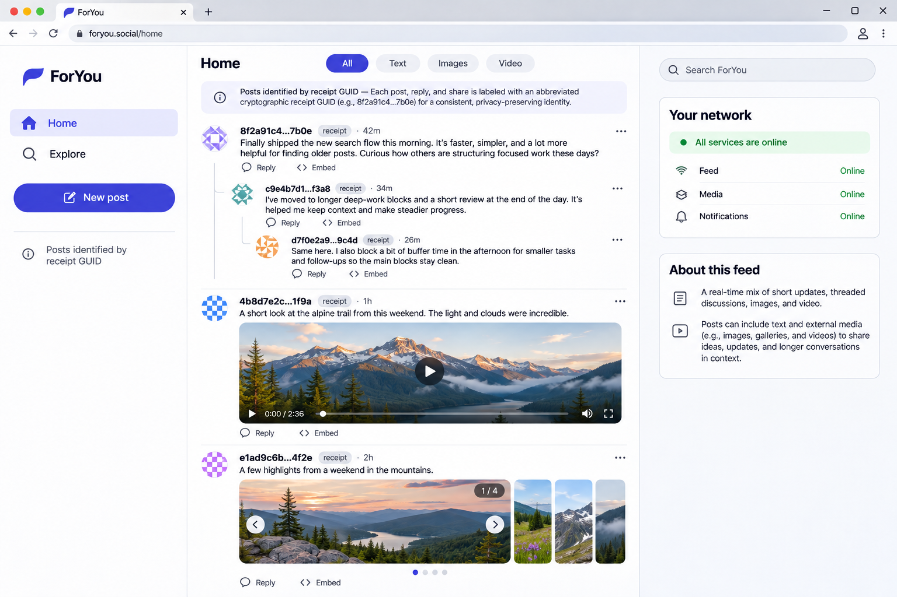
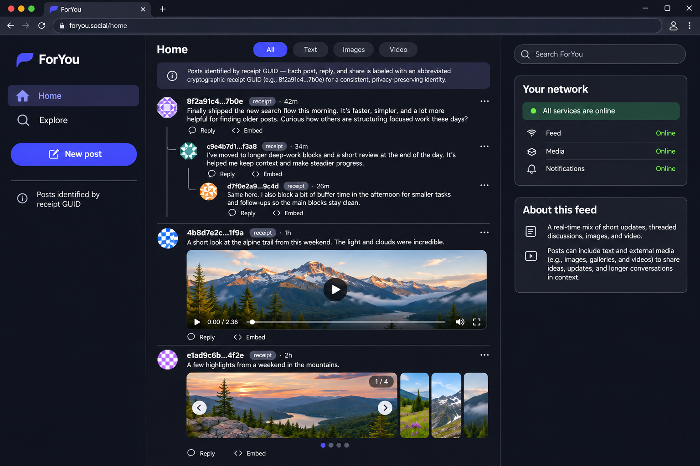
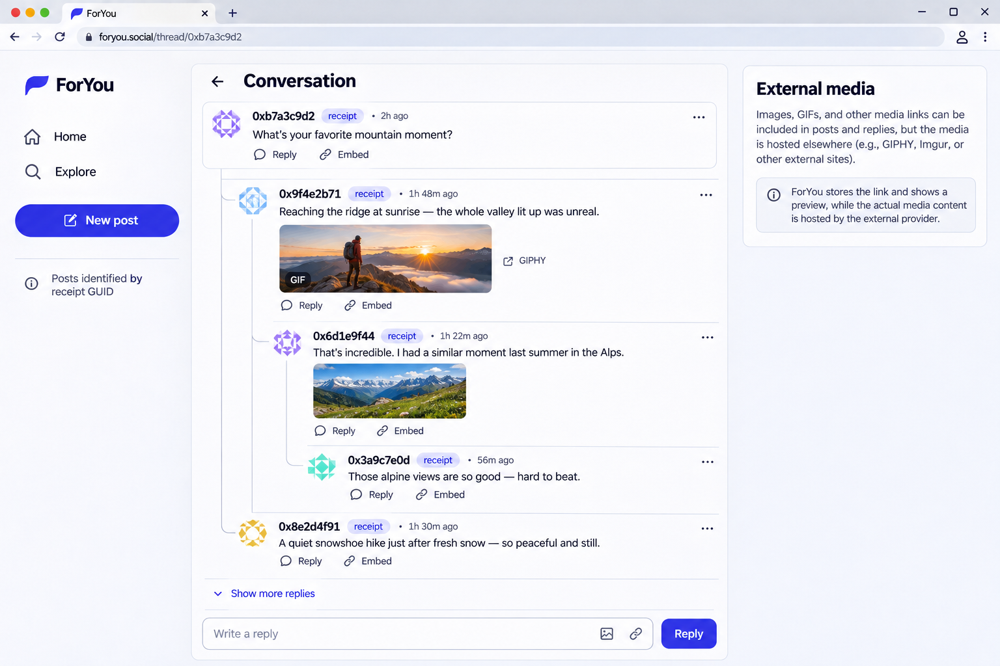
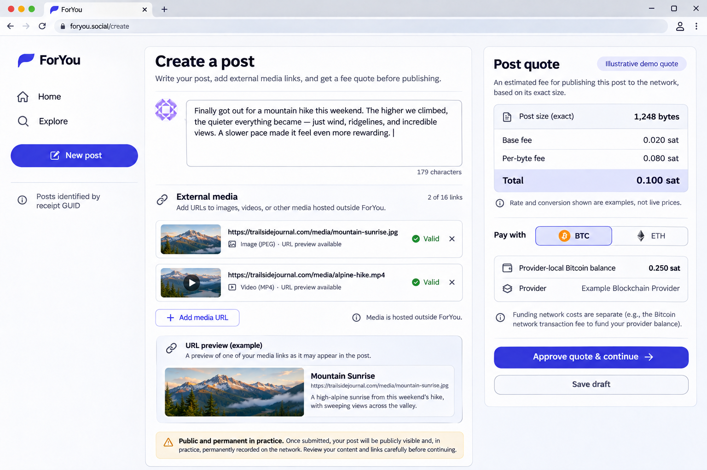
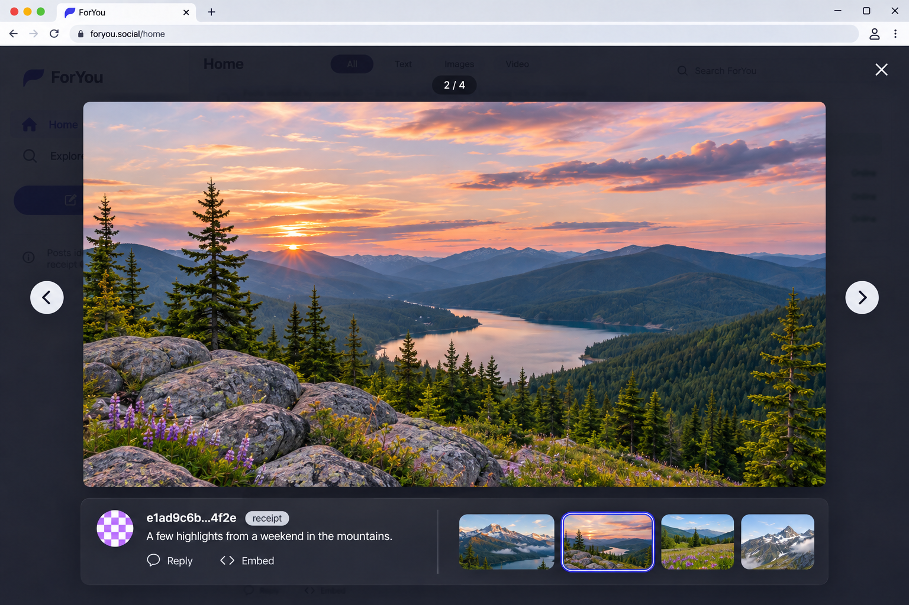
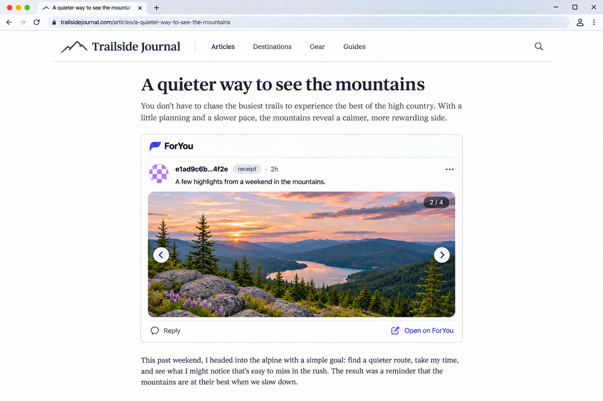

The social network nobody owns.
ForYou is an open protocol for public posts that you sign with your own key. Anyone can read them for free, any app can display them, and any operator can store them. Posting costs about a hundredth of a cent, a price set by the specification and not by a company.


Your posts should outlive the app you wrote them in.
Most platforms bundle your identity, your posts and your audience into one company's database. ForYou separates them. The core is small on purpose: signed posts, a small admission fee, and open retrieval. Everything else is left to the apps built on top.
You hold the identity
An author is an Ed25519 key, not a row in someone's user table. Every post is signed, so any app can verify who wrote it without asking a platform.
Reading is free and open
Anyone can download public records from any provider that holds them. No reader account, no paywall, no API key.
A fee that stops spam, not people
Each post pays a tiny fee that grows with its size. It is a hurdle for bulk spam, not a profit centre, and providers cannot raise it.
Providers compete on quality
Independent operators store and serve posts. Those with better measured quality and longer proven retention earn a larger share of the fees back.
History is kept, not rewritten
There is no delete message. An edit is a new signed version that points at the one it replaces, so readers can always see what changed.
Apps own the experience
Feeds, ranking, follows, likes and discovery are not protocol state. Any app can build its own on the same public records.
From a draft to a record anyone can verify.
A post is Markdown text with up to 16 references to media hosted elsewhere. The protocol stores the text and the signed references. It never stores the media files.
Sign
Your app builds the post and signs it with your key. The post's ID is a hash of exactly what you signed.
Pay
You keep a small prepaid balance with a provider you choose. It quotes the fee for this exact post and debits it once.
Admit
The provider stores the post and issues a signed receipt. The fee is settled to the Foundation and audited by independent monitors.
Read
Anyone downloads the post, checks the signature and the settlement proof, and shows it however their app likes.
Follow the money. All of it is public.
The fee is not revenue for whoever admits your post. Providers pass all of it to the ForYou Foundation, and the Foundation pays part of it back according to published measurements. Providers earn a living from the services they build on top.
Author
Pays 136 millisatoshis or 48.9 gwei for each started KiB. Larger posts cost more, which keeps short posts cheap and long posts possible.
Provider
Collects the fee and settles it with signed, hash-chained claims backed by on-chain deposits. Anyone can audit a claim from public data.
Foundation
Has no vote on settlement. A committee of at least five independent monitors decides, by more than two-thirds, which claims are settled.
Back to providers
Paid quarterly. The share rises with measured quality and with the years of retention a provider has actually proven.
Kept for the long term
The Foundation funds and owns an archive of every settled post delivered to it, with no scheduled expiry.
Monitor committee
Pays the independent monitors that audit every claim and publish their signed witnesses.
Different choices, made on purpose.
| Area | Typical platform | ForYou |
|---|---|---|
| Identity | An account the platform can suspend or reclaim. | A signing key you hold. You can rotate it and move to another provider. |
| Reading | Through the platform's app, under its rules and limits. | Open download from any provider. Any app can verify and display the records. |
| Price | Free, paid for with attention and data. | About $0.0001 per post, fixed by an open specification and bounded on every revision. |
| Storage | One company, for as long as it chooses. | Independent providers with a declared retention period, plus a Lifetime Vault. |
| Media | Uploaded to and held on the platform's servers. | Hosted wherever you choose. Posts carry links and SHA-256 hashes, so a swap is detectable. |
| Feed | One ranking algorithm you cannot inspect. | Not part of the protocol. Each app builds its own. |
Server-rendered, fast and small.
The reference platform is one Go binary that runs four roles: client, provider, replica and foundation. The client renders HTML on the server and uses HTMLeX for interactions, so there is no single-page-app bundle to ship. These design concepts guide the build.




Honest about where this is.
The specification text is at release 1.0 and ships with JSON schemas, signed test vectors and a tested model of its economics. The reference platform is an early infrastructure demo. There is no live network yet.
Working today
- Four server roles over HTTP/3 and HTTP/1.1 with TLS
- Server-rendered client with a mock feed, threads, slideshows, search and embeds
- Light and dark themes with keyboard focus handling
- Health and database readiness endpoints for each role
- Go tests,
go vetand formatting checks in CI
Still to build
- Message encoding, signatures and receipt verification against the specification's vectors
- Storage schema, public retrieval and incremental sync
- Key creation, signing and backup in the client
- Balances, fee quotes, settlement claims and monitor witnesses
- Independent security and legal review before any real funds
One binary. Two commands.
You need Go 1.27 or newer. The demo needs no Node, Docker, database or wallet. Each role listens on its own loopback port, starting with the client on 8443.
The full setup, including PostgreSQL and the other three roles, is in the README.
# create a local development certificate go run ./cmd/devcert # start the client, then open https://127.0.0.1:8443 go run ./cmd/foryou -role client # run the checks go test ./...
Read the rules. Then help build to them.
The specification is the source of truth for every message, fee and proof. The reference platform is where it becomes running code. Both are MIT licensed and open to issues and pull requests.